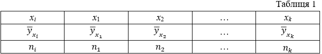
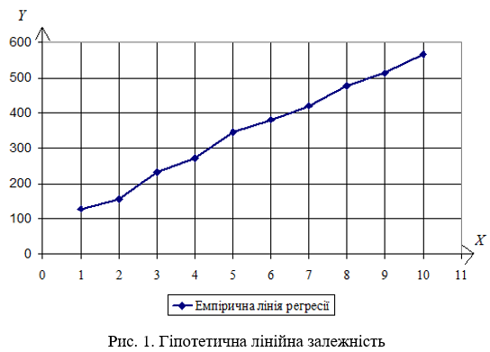
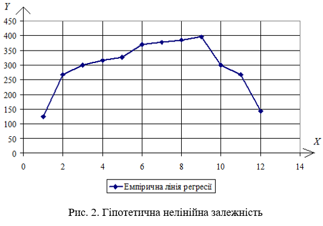
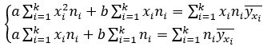
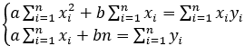
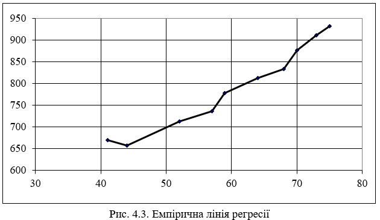
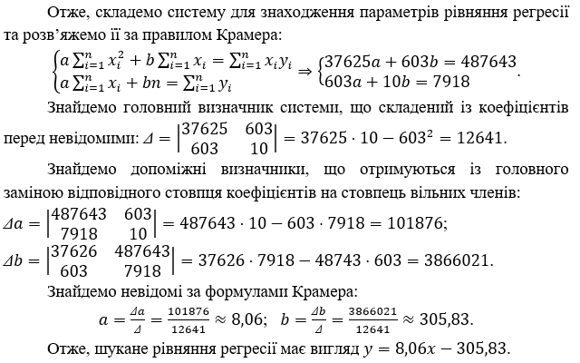

Побудова регресивних моделей
При вивченні стохастичних зв’язків між різними ознаками об’єкта головною задачею є встановлення виду функціональної залежності Y=f(Х). В першу чергу це пов’язано з необхідністю прогнозування досліджуваних процесів. Математико-статистичний апарат, що дозволяє встановити вид функціональної залежності називається регресійним аналізом, а функція, що описує цю залежність, називається рівнянням регресії.
1 Встановлення виду кореляційної залежності
Регресійний аналіз проводиться за такими етапами:
- Встановлення виду функціональної залежності результативної ознаки Y від факторної ознаки Х.
- Побудова регресійної моделі.
- Перевірка статистичної значущості побудованої моделі.
Перший етап регресійного аналізу є найважливішим, оскільки помилки у виборі виду залежності призводять до побудови регресійної моделі, що не відповідає емпіричним даним і не може використовуватися для прогнозування.
Вибіркові дані для вивчення функціонального зв’язку між ознаками Х та Y зазвичай мають вигляд пар їх значень: \((x_1;y_1)\), \((x_2;y_2)\), …, \((x_n;y_n)\), хі – значення величини Х, уі – значення Y, n – кількість пар значень, \(i=\overline{1,n}\). Якщо їх кількість достатньо велика, то для зручності розрахунків дані групуються і будується статистичний ряд, що містить значення Х, відповідні середні значення Y та частоти (табл.1).

Згруповані дані (табл.1) зображуються графічно, що часто дозволяє визначити вид залежності Y від Х.
Ламана лінія, що сполучає крапки з координатами \((x_i;\overline{y_{x_1}})\), називається емпіричною лінією регресії.
Якщо емпірична лінія регресії значно наближається до прямої лінії, то висувається гіпотеза про наявність лінійного зв’язку між досліджуваними ознаками (рис. 1).

В іншому випадку висувається гіпотеза про наявність нелінійного зв’язку (рис.2).

2 Лінійна регресія
Якщо висунуто гіпотезу про наявність лінійної залежності результативної ознаки (Y) від факторної (X), то рівняння регресії має вид:
\(\overline{y_x}=ax+b\), (1)
де \(a,b\) - параметри моделі.
Побудова лінійної регресійної моделі – це знаходження параметрів рівняння (1). Параметри рівняння регресії зазвичай знаходяться за методом найменших квадратів.
Ідея методу найменших квадратів
Нехай при вивчення залежності Y від Х було отримано вибіркові дані: \(x_1,x_2,...,x_n\) – значення величини Х, \(y_1,y_2,...,y_n\) – відповідні значення Y. За вибірковими даними було побудовано рівняння регресії \(y=ax+b\). Якщо в рівняння підставити замість х значення \(x_1,x_2,...,x_n\), то будуть отримані теоретичні значення Y: \(y_{1,теор},y_{2,теор},...,y_{n,теор}\), які відрізняються від \(y_1,y_2,...,y_n\). Різниця значень \(y_{i,теор}-y_i\) називається помилкою регресійної моделі і позначається еі. Якщо параметри рівняння підбираються так, щоб сума квадратів помилок була мінімальною, то говорять, що вони отримані за методом найменших квадратів.
У випадку лінійної регресії параметри рівняння регресії за методом найменших квадратів знаходяться з системи лінійних алгебраїчних рівнянь:

(2)Якщо вибіркові дані не згруповані, то система (2) значно спрощується:

(3)
Приклад. Побудувати регресійну модель, що описує залежність сумарних виробничих затрат Y (тис. грн.) від об’ємів виробництва Х (тис. од.). Відповідні статистичні дані надано у таблиці 2.
Таблиця 2
|
Х |
41 |
44 |
52 |
57 |
59 |
64 |
68 |
70 |
73 |
75 |
|
Y |
670 |
657 |
713 |
736 |
778 |
812 |
833 |
876 |
911 |
932 |
Розв’язок. В таблиці 2 надано вибіркові дані: \(x_i, i=1,n\) значення величини Х та відповідні значення \(y_i, i=1,n\) ; кількість пар – \(n=10\) невелика, тому для проведення регресійного аналізу їх можна не групувати.
Перший етап аналізу: визначимо вид залежності Y від Х. Побудуємо емпіричну лінію регресії (рис. 3).

Оскільки емпірична лінія регресії наближається до прямої лінії, то висуваємо гіпотезу про лінійну залежність Y від Х, тобто рівняння регресії будемо шукати у вигляді \(y=ax+b\).
Другий етап: знайдемо параметри \(a,b\) рівняння регресії, для чого складемо систему (3) для даних, що не згруповані. Необхідні розрахунки для зручності оформимо у вигляді таблиці (табл.3).
Таблиця 3
|
Розрахункова таблиця |
Суми |
||||||||||
|
хі |
41 |
44 |
52 |
57 |
59 |
64 |
68 |
70 |
73 |
75 |
603 |
|
yі |
670 |
657 |
713 |
736 |
778 |
812 |
833 |
876 |
911 |
932 |
7918 |
| \({x_i}^2\) |
1681 |
1936 |
2704 |
3249 |
3481 |
4096 |
4624 |
4900 |
5329 |
5625 |
37625 |
| \(x_iy_i\) |
27470 |
28908 |
37076 |
41952 |
45902 |
51968 |
56644 |
61320 |
66503 |
69900 |
487643 |
